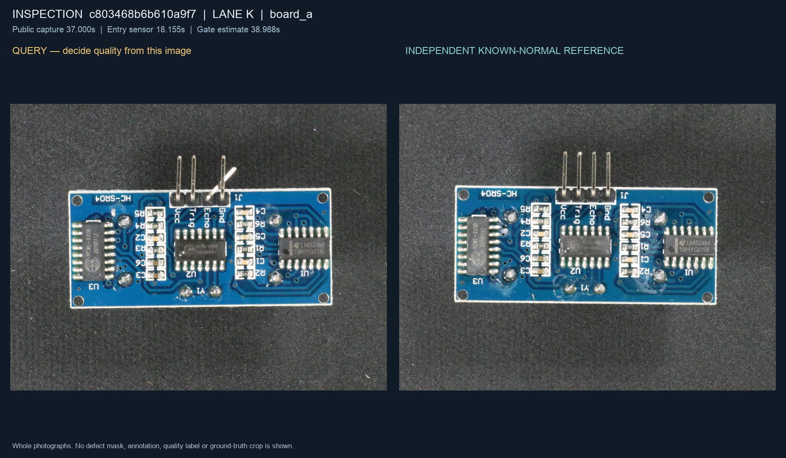

REAL-TIME VISUAL INSPECTION · 01
看清差异。
在正确的时刻行动。
四条传送带，二十四块电路板。对照正常样本识别结构缺陷，
在下游分拣门触发对应通道；让正常品继续前进。
180s连续运行
±350ms有效动作窗口
11/12最低缺陷拦截
静态设计预览 · 显示开发场景的一张完整查询／参考图，不运行时钟、不执行动作、不代表实测成绩。
通道 K · 检视台board_a

等待载具进入检测区域
公开编码器视图037.000 / 180.000 s
预览模式按键仅在已连接的运行场景中生效。
动作回执仅显示已发生的动作
尚无动作